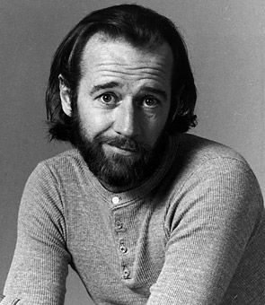
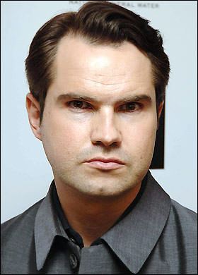
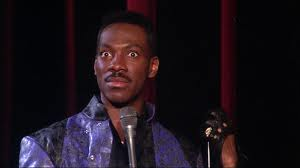
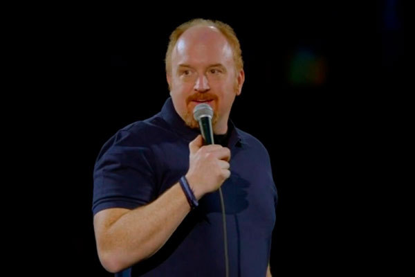
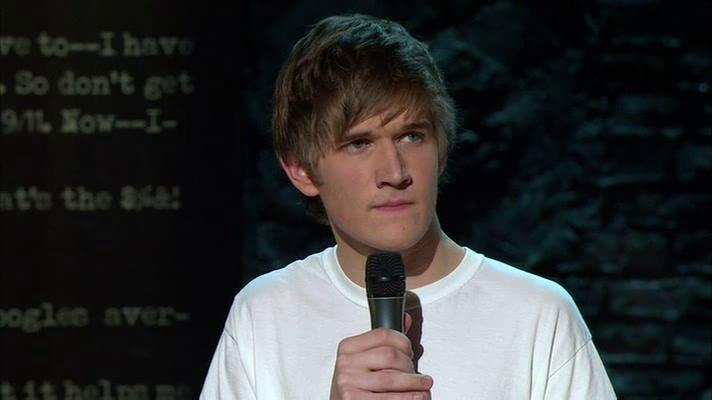

|  George Calrin |
 Jimmy Carr |
Danila Poperechnii |
|  Eddie Murphy |
 Lui See Key |
 Deep Lee |
|
In stand-up comedy, the feedback of the audience is instant and crucial for the comedian's act. Audiences expect a stand-up comic to provide a steady stream of laughs, and a performer is always under pressure to deliver. Will Ferrell has called stand-up comedy "hard, lonely and vicious". A stand-up comedy show may involve only one comedian, or feature a "headline" or a "showcase" format. A headline format typically features an opening act known as a host, compère (UK), or master of ceremonies (MC), who usually warms up the crowd, interacts with the audience members, makes announcements, and introduces the other performers. This is followed by one or two "middle" or "featured" acts, who perform 15- to 20-minute sets, followed by a headliner who performs for longer. The "showcase" format consists of several acts who perform for roughly equal lengths of time, typical in smaller clubs such as the Comedy Cellar, or Jongleurs, or at large events where the billing of several names allows for a larger venue than the individual comedians could draw. A showcase format may still feature an MC. Many smaller venues hold "open mic" events, where anyone can take the stage and perform for the audience, offering a way for amateur performers to hone their craft and possibly break into the profession, or for established professionals to work on their material. "Bringer shows" are another opportunity for amateur performers. The performer must bring a specified number of paying guests in order to get stage time. The guests usually have to pay a cover charge and there is often a minimum number of drinks that must be ordered. These shows usually have a "showcase" format. This type of show gives comedians better exposure than open mics because there is usually better audience turnout and industry professionals sometimes go to watch. Different comedy clubs have different requirements for their bringer shows. Gotham Comedy Club in New York City, for example, usually has ten-person bringers, while Broadway Comedy Club in New York City usually has six-person bringers. As the name implies, "stand-up" comedians usually perform their material while standing, though this is not mandatory |
| Find a stories |
Order on artist |
|---|
Contact US
For General queries: |